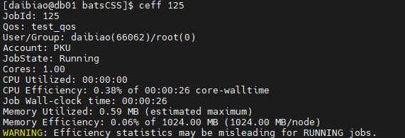
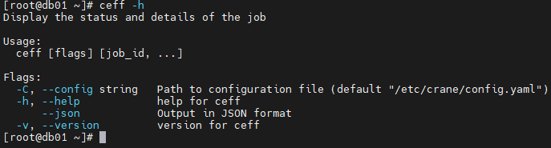
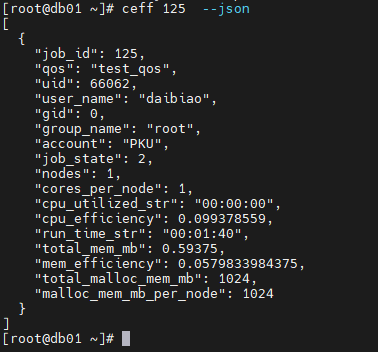

ceff 查看作业运行实况
ceff用来显示作业运行过程中的实时情况。
查看任务实时情况：
ceff 作业名,作业名
ceff运行结果展示

主要输出项
- JobId: 作业的唯一标识符。
- Qos: 作业运行所在的集群名称。
- User/Group: 提交作业的用户和用户组。
- Account：账户名
- State: 作业的当前状态（例如，COMPLETED、FAILED、CANCELLED 等）。
- Cores: 作业使用的核心数量。
- Nodes: 作业分配的节点数量。
- Cores per node: 每个节点分配的核心数量。
- CPU Utilized: 作业实际使用的 CPU 时间。
- CPU Efficiency: CPU 使用效率，通常表示为作业实际使用的 CPU 时间占分配的核心墙时间的百分比。
- Job Wall-clock time: 作业的墙钟时间，即作业从开始到结束的总时间。
- Memory Utilized: 作业实际使用的内存量。
- Memory Efficiency: 内存使用效率，通常表示为作业实际使用的内存量占分配内存的百分比。
主要参数
- -h/--help: 显示帮助
- -C/--config string：配置文件路径(默认为 "/etc/crane/config.yaml")
- --json 输出后端返回任务信息
- -v, --version 显示ceff 的版本
例：
ceff -h

ceff 作业id --json
